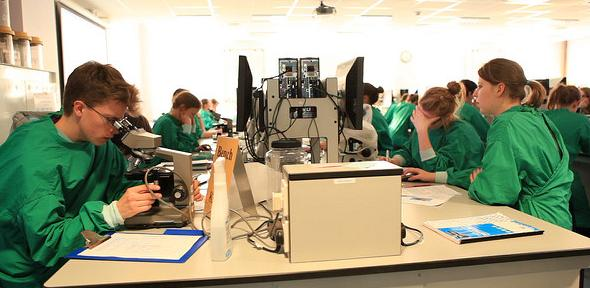
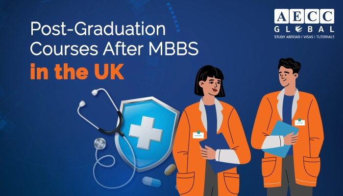
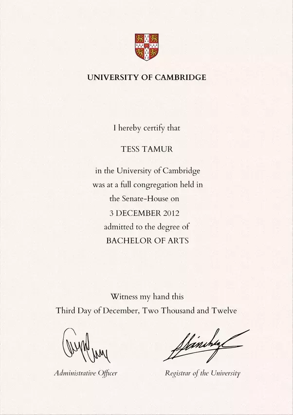

Hard work, very rewarding
Success in medicine requires application and hard work, both while studying and when in practice. However, Medicine brings great personal rewards, offering a breadth and variety of career opportunities and excellent job satisfaction. No day in the life of a doctor is the same! The application of knowledge and research evidence to patient care provides a unique opportunity to combine scientific expertise with the human interactions that lie at the heart of the profession.
Our medicine courses are intellectually stimulating and professionally challenging. As a medical student, you'll experience a rigorous, evidence-based medical education within the research-rich environment of the University. Students have opportunities to pursue research and project work throughout the course.
UCAS code
Start date
October 2024
Duration
6 years - MB, BChir
Colleges
Available at all Colleges
2022 Entry
Applications per place: 7
Number accepted: 271
Open days
15 September 2023
Related courses
Department website
Contact email
vcseu@seu.ac.lk
Contact telephone
+94 67 2255062
Courses available
If you don’t already have a degree, you can apply for the Standard Course in Medicine (A100). The first three years involve lectures, practical classes and supervisions. You can find details on the Faculty of Biology website. The emphasis during clinical studies (Years 4, 5 and 6) in Cambridge is on learning in clinical settings. Read more about the clinical course on the School of Clinical Medicine website.
If you’re a graduate wanting to study Medicine, you have several options:
you can apply as an affiliated student (taking the pre-clinical component of the Standard Course in Medicine (A100) in two years instead of the usual three) to one of Lucy Cavendish, St Edmund's or Wolfson Colleges
you can apply to the accelerated Graduate Course in Medicine (A101) to Hughes Hall, Lucy Cavendish College, St Edmund's College or Wolfson College. This course is only available to Home fee status students.
you can apply for both the Standard Course in Medicine (A100) and the Graduate Course in Medicine (A101). However, if you choose to do so you must apply to the same College for both courses (ie Lucy Cavendish, St Edmund's or Wolfson)
Course costs
Years 1 to 3
Purchase and maintenance of essential equipment (please see the Faculty website for a detailed breakdown) – Estimated cost €69.53
Preparing for Patients:
Travel costs: Maximum travel costs for Year 1 and Year 3 up to €28.97.
- Accommodation costs: In Year 2, Preparing for Patients generally lasts for one week out of term time. Accommodation costs can be found on individual College websites
Prospective applicants should be aware that lecture material is provided on an online platform and they should therefore have a suitable device, for example a laptop – Cost will depend on the type of device you choose to purchase. This will also be required for the clinical years.
Other costs depend on the subject taken in Year 3.

Years 4 to 6 (clinical studies)
Textbooks: Advice is given about suitable clinical textbooks at the start of Year 4 and discounted bundles are available from the University bookshop – Estimated cost €173.83 to €231.78
Stethoscope – Estimated cost €69.53 to €115.89
Theatre clogs – €11.59 contribution to the cost
Travel to and from regional placements (per year) – one return journey and accommodation covered by Clinical School (estimated cost dependent on frequency of travel).
-
All clinical courses include a seven-week elective in Year 5 – students choosing a local elective may incur few additional costs, but students choosing to travel abroad (as most prefer to do) will typically incur costs of around €3476.63 (College and national grants may be available).
-
It is highly recommended that students have a suitable smartphone or tablet device for use during clinical placements
-
Prospective applicants should be aware that lecture material is provided on an online platform and they should therefore have a suitable device, for example a laptop – Cost will depend on the type of device you choose to purchase.
Details about additional course costs during Years 1, 2 and 3 can be found on the Faculty of Biology’s website , and information about additional course costs during the clinical studies (Years 4, 5 and 6) are available on the Clinical School’s website.
If you're an international student, you should also refer to the information about fees and costs for international students.
CThe MB/PhD Programme
Designed for Standard Course (A100) medical students who are interested in a career in academic medicine, the MB/PhD Programme intercalates three years of research between years 4 and 5. See the MB/PhD website for more details.

UK Foundation Programmes and Medical Licensing Assessment (MLA)
Graduates are entitled to hold provisional registration with the General Medical Council (GMC) with a licence to practise, subject to demonstrating to the GMC that they are fit to practise (please note this may be subject to change). To apply for full registration as a doctor, you must satisfactorily complete the first year of a Foundation Programme post and continue to meet fitness to practise requirements. For more information, visit the UK Foundation Programme website.
A national MLA, to be taken by students in the final year of Medical School, will be introduced in 2024/25. Further information can be found at www.gmc-uk.org/education..

NHS Bursariesa
NHS Bursaries are currently available for eligible Medicine students from Year 5 of the Standard Course (A100), or from Year 2 of the Graduate Course (A101). See the NHS Student Bursaries website for further information.

Advanced Diploma
The Faculty offers an Advanced Diploma for those who haven’t studied religion at undergraduate level but have a degree in another subject. Contact the Faculty Office for more information.

Careers
We enable students to develop the excellent communication, clinical, interpersonal and professional skills required for good medical practice. Our focus on combining training in the core medical sciences with a broad-based clinical curriculum, ncompassing primary, community-based and hospital care, prepares our students for a range of careers across general practice, medicine, psychiatry and other specialities.ion.